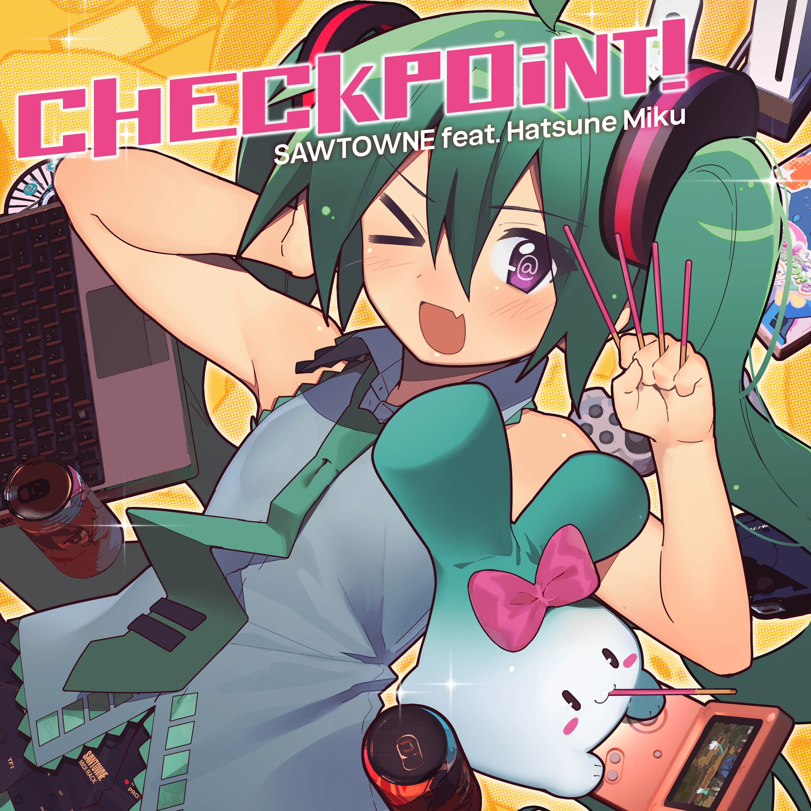
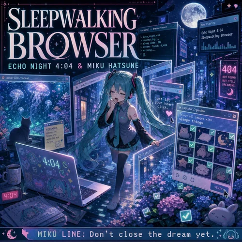
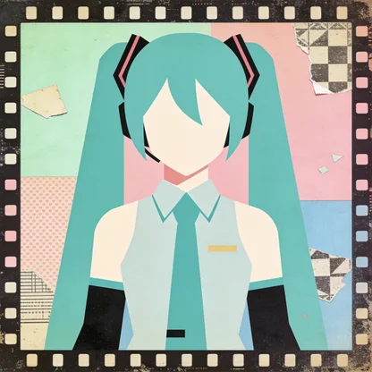
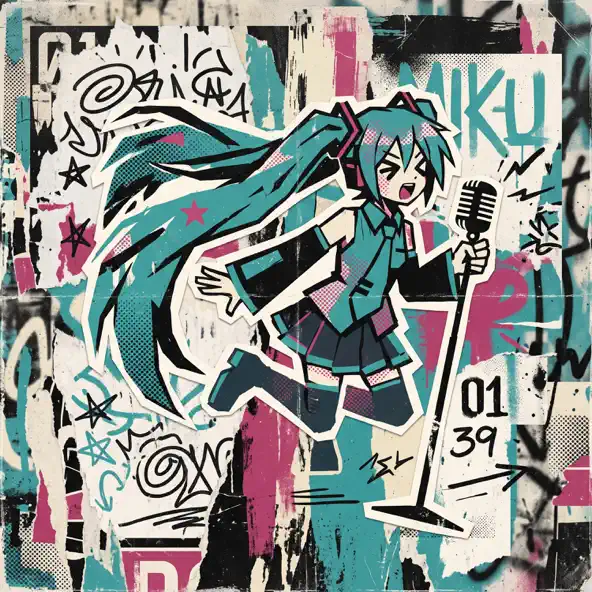

Hatsune Miku Albums
Explore landmark records and compilation albums featuring the voice of Hatsune Miku.

CHECKPOiNT!
SAWTOWNE
CHECKPOiNT! is a 2026 Vocaloid album by SAWTOWNE featuring Hatsune Miku, bringing together seven tracks that showcase an energetic, playful approach to electronic pop. The album combines remastered versions of earlier songs with newer material, creating a collection that celebrates both SAWTOWNE's musical history and the evolution of their sound. Tracks such as “Lollipop,” “FANTASY DiSCO NIGHT,” “M@GICAL CURE! LOVE SHOT!,” and “LOVELY CAVITY” highlight catchy melodies, colorful electronic production, and Miku's distinctive synthesized vocals. What makes the album stand out is its blend of modern electropop with a nostalgic appreciation for the Vocaloid music scene, balancing familiar influences with SAWTOWNE's own lively style. Rather than presenting a single new musical direction, CHECKPOiNT! serves as both a retrospective of the producer's work and an introduction to the sound that defines their music.
Explore CHECKPOiNT!
Sleepwalking Browser
Echo Night 4:04
Sleepwalking Browser is a 2026 album credited to Echo Night 4:04 and Hatsune Miku, featuring twelve tracks that blend digital imagery with dreamlike and nocturnal themes. Songs such as “404 Goodnight Tunnel,” “Captcha Garden,” “Tabs I Never Closed,” and “Bookmark Witchcraft” draw on internet terminology, transforming familiar aspects of browsing into imaginative musical concepts. This combination gives the album a distinctly digital identity, exploring the intersection of online culture and surreal creativity. Its electronic, dance-oriented direction complements the unusual track titles, creating a concept that feels connected to both modern technology and the strange, fragmented experience of navigating the internet late at night.
Explore Sleepwalking Browser
Piko Piko Panic
Garbi KW
Piko Piko Panic is a 2026 album by garbi kw featuring Hatsune Miku, blending alternative, indie, pop, and rock influences into a collection of twelve tracks. What makes the album distinctive is its imaginative song titles, which combine everyday experiences with surreal imagery, from “Neon Matcha Crash” and “Gravity Loves Plastic” to “Stereo Blue Mirage.” Across the album, these contrasting ideas create a playful yet reflective identity, balancing colorful, unconventional concepts with themes of time, change, and modern life. With Hatsune Miku's synthesized vocals at the center of the project, Piko Piko Panic showcases a contemporary approach to Vocaloid music that embraces experimentation and gives each track its own character.
Explore Piko Piko Panic
Falling Into Blue
Gabri KW
Falling Into Blue is a 2026 album by Garbi KW that explores a reflective, atmospheric musical direction through evocative song titles and imagery. Tracks such as “Paper Holds Fire” and “Autumn Carries Light” suggest themes of contrast, change, and finding beauty in ordinary moments. The album's identity is shaped by its poetic naming and sense of introspection, inviting listeners to settle into its atmosphere and interpret each song in their own way. Rather than relying on a single lyrical image, Falling Into Blue evokes a broader feeling of transition and contemplation, making it an album suited to listeners who enjoy thoughtful music with an atmospheric character.
Explore Falling Into Blue